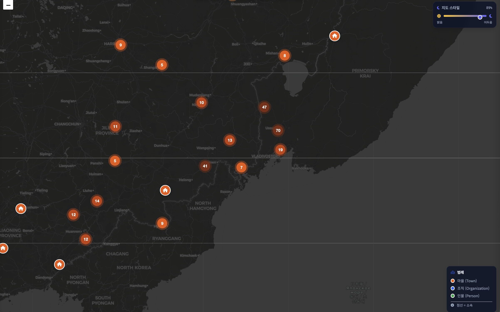
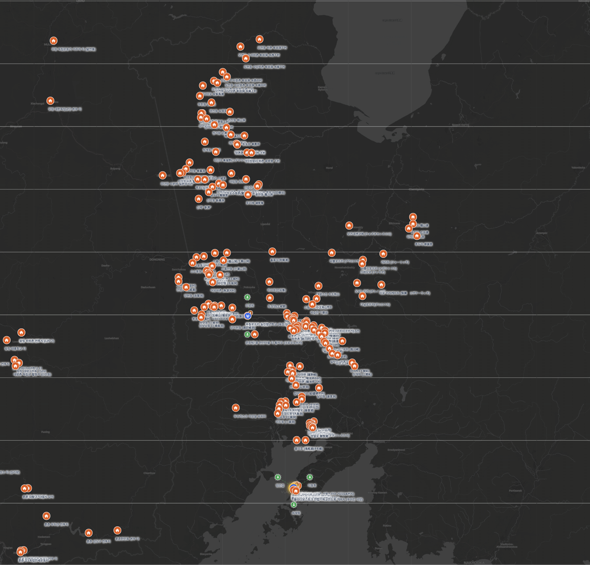
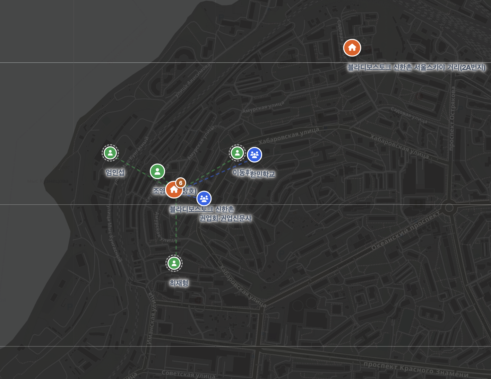
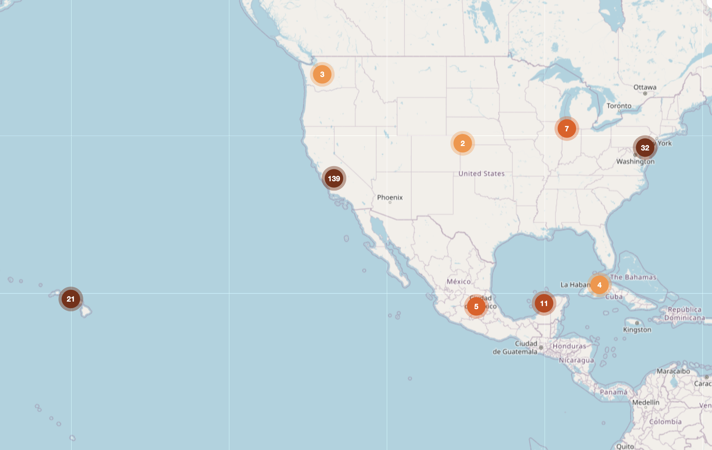
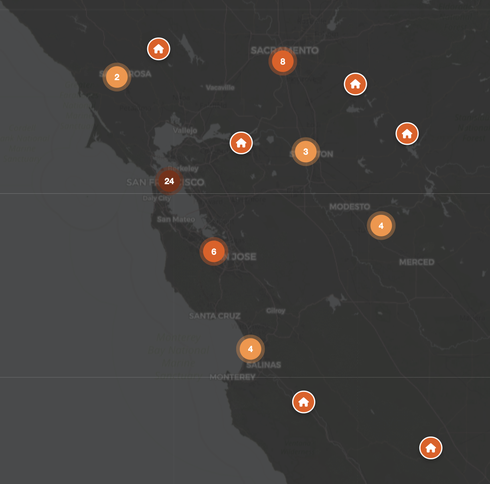

프로젝트 소개
세계 속 흩어져 있던 코리안 타운을 한 곳에서 모아 보기
해외 한인 마을에 관한 정보는 지금까지 논문과 사료집, 신문, 회고록 속에 따로따로 흩어져 있었습니다. 코리아타운 DB는 이 기록들을 마을·조직·인물이라는 하나의 구조로 모아, 연구자와 교육기관, 재외동포 사회가 함께 검색하고 인용할 수 있는 공공 데이터 인프라를 만듭니다. 지도 위에 데이터 표시를 통해 직관적 이해를 도와, 연구와 교육을 위한 오픈데이터로 계속 재사용될 것입니다.





무엇을 할 수 있나요
지도를 통해 네 단계로 데이터를 보기
코리아타운의 상세정보, 위치 정확도 확인, 시대별 필터링, 그리고 AI에 의한 데이터분석까지
마을 → 조직 → 인물
지도를 확대하면 마을에 속한 단체와 사람이 자연스럽게 펼쳐집니다. 메인은 언제나 마을입니다.
있는 그대로의 불확실함
정확한 번지수부터 대략적인 지역까지, 위치정확도 필드로 사료의 한계를 감추지 않고 보여줍니다.
시간을 넘겨보는 지도
연도 필터로 마을이 생기고 사라진 흐름을 직접 훑어봅니다.
AI로 연구보조
AI를 활용해 여러 코리아타운 간 데이터 분석 및 인사이트를 도출합니다.
데이터 수집 로드맵
좁게 시작해, 단계적으로 넓힙니다
우선 러시아 극동과 미국부터 채우고, 이후 일본, 중국, 그리고 유럽까지 단계적으로 넓혀갑니다.
러시아 극동 · 미국 서부
1906년 연해주 한인마을 분포도, 1922년 조선인촌락 및 인구조사서, 캘리포니아 센서스 자료를 중심으로 마을과 조직 데이터를 채우고 있습니다.
일본
식민지기 도항과 정착 관련 사료를 중심으로 다음 지역을 준비합니다.
중국
만주 지역 이주와 정착 기록을 축적할 예정입니다.
유럽
비교적 최근 형성된 유럽 내 한인 공동체까지 범위를 넓힙니다.
진행 기록
조금씩 쌓이는 중입니다
마을·조직·인물 3단계 구조를 정하고, 코리아타운 DB 첫 화면을 열었습니다.
위치정확도, 연도 필터, 다크모드, 2계층 클러스터링을 더하고 확보 데이터가 900건을 넘었습니다.
랜딩페이지가 개설되었습니다. 위치정확도 시각화와 주소표시 기능을 추가했습니다.
데이터와 방법론
출처가 곧 데이터의 중심입니다
모든 항목은 철저하게 사료에 기반해 토론을 거쳐 입력합니다.
마을 Town
위도·경도 · 위치정확도 · 출처
조직 Organization
관련 마을 · 출처
인물 Person
관련 마을 · 관련 조직 · 출처
- 독립기념관 해외사적지 데이터셋 data.go.kr
- 국사편찬위원회 한국사데이터베이스 db.history.go.kr
- 세계한민족문화대전 okpedia.kr
- 러시아 대통령도서관 prlib.ru
연구팀
글로벌 코리안 연구자들이 모였습니다
코리안 디아스포라 연구팀은 한 달에 한 번 세미나를 통해 데이터를 보강합니다.
김슬기
러시아 데이터
성균관대학교 사학과 박사수료(2024~)
근대 한인 디아스포라의 이동과 생존 전략을 연구합니다. 현재 러시아 극동 조선인 개신교 공동체(1905–1923)를 주제로 박사학위논문을 작성하고 있습니다.
박영훈
미주 데이터
성균관대학교 사학과 박사 수료(2023~)
성공회대학교 동아시아연구소 연구원(2023~)
21세기 중반 재미한인의 커뮤니티를 연구합니다. 현재 1936-1952년 캘리포니아 한인 커뮤니티와 그 정치적 변동을 주제로 박사학위논문을 작성하고 있습니다.
송영화
기획
성균관대학교 사학과 박사졸업 (2023)
러시아 극동 코리안의 국적에 대해 연구중입니다. 주요 저서로 『귀화를 넘어서 : 러시아로 간 한인 이야기』(2025)가 있습니다.